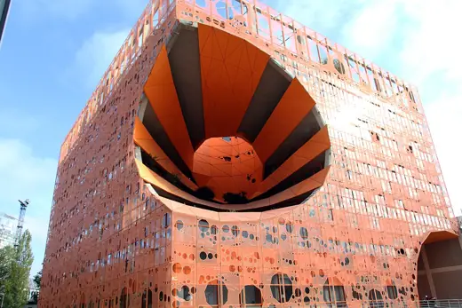
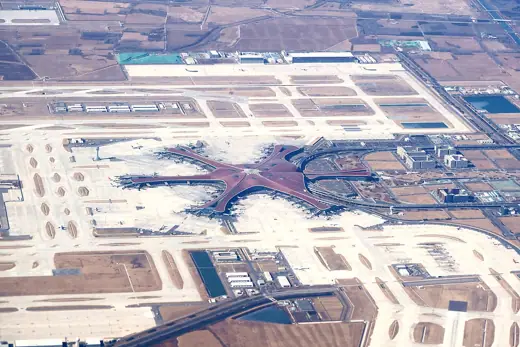

Buildings 51
Sort
 Metropol Parasol2011 · Seville
Metropol Parasol2011 · Seville London Aquatics Centre2011 · London
London Aquatics Centre2011 · London Port House2016 · Antwerp
Port House2016 · Antwerp King Abdullah Petroleum Studies and Research Center2017 · Riyadh
King Abdullah Petroleum Studies and Research Center2017 · Riyadh Canton Tower2010 · Guangzhou
Canton Tower2010 · Guangzhou Morpheus Hotel2018 · Macau
Morpheus Hotel2018 · Macau Napoli Afragola station2017 · Afragola
Napoli Afragola station2017 · Afragola Wangjing SOHO2014 · Beijing
Wangjing SOHO2014 · Beijing Mercedes-Benz Museum2006 · Stuttgart
Mercedes-Benz Museum2006 · Stuttgart The Opus2020 · Dubai
The Opus2020 · Dubai Jinwan Arts Center2023 · Zhuhai
Jinwan Arts Center2023 · Zhuhai MAXXI2010 · Rome
MAXXI2010 · Rome KAFD Metro Station2024 · Riyadh
KAFD Metro Station2024 · Riyadh Sheraton Huzhou Hot Spring Resort2013 · Huzhou
Sheraton Huzhou Hot Spring Resort2013 · Huzhou Baha'i Temple of South America2016 · Santiago
Baha'i Temple of South America2016 · Santiago Salerno Maritime Terminal2016 · Salerno
Salerno Maritime Terminal2016 · Salerno Generali Tower2017 · Milan
Generali Tower2017 · Milan Nanjing International Youth Cultural Centre2018 · Nanjing
Nanjing International Youth Cultural Centre2018 · Nanjing Cayan Tower2013 · Dubai
Cayan Tower2013 · Dubai Museum of the Future2022 · Dubai
Museum of the Future2022 · Dubai Taipei Music Center2020 · Taipei
Taipei Music Center2020 · Taipei Heydar Aliyev Center2012 · Baku
Heydar Aliyev Center2012 · Baku Library and Learning Center, Vienna University of Economics2013 · Vienna
Library and Learning Center, Vienna University of Economics2013 · Vienna Galaxy SOHO2012 · Beijing
Galaxy SOHO2012 · Beijing Sheikh Zayed Bridge2010 · Abu Dhabi
Sheikh Zayed Bridge2010 · Abu Dhabi Harbin Opera House2015 · Harbin
Harbin Opera House2015 · Harbin Museo Soumaya2011 · Mexico City
Museo Soumaya2011 · Mexico City Shenzhen Bao'an International Airport Terminal 32013 · Shenzhen
Shenzhen Bao'an International Airport Terminal 32013 · Shenzhen Messner Mountain Museum Corones2015 · Bruneck
Messner Mountain Museum Corones2015 · Bruneck
Orange Cube2010 · Lyon Swatch Headquarters, Biel2019 · Biel/Bienne
Swatch Headquarters, Biel2019 · Biel/Bienne Capital Gate2011 · Abu Dhabi
Capital Gate2011 · Abu Dhabi Evolution Tower2014 · Moscow
Evolution Tower2014 · Moscow Pierresvives2012 · Montpellier
Pierresvives2012 · Montpellier Guangzhou Opera House2010 · Guangzhou
Guangzhou Opera House2010 · Guangzhou Jockey Club Innovation Tower2014 · Hong Kong
Jockey Club Innovation Tower2014 · Hong Kong Leeza SOHO2019 · Beijing
Leeza SOHO2019 · Beijing Ordos Museum2011 · Ordos
Ordos Museum2011 · Ordos Riverside Museum2011 · Glasgow
Riverside Museum2011 · Glasgow Kaohsiung Music Center2021 · Kaohsiung
Kaohsiung Music Center2021 · Kaohsiung Tao Zhu Yin Yuan2018 · Taipei
Tao Zhu Yin Yuan2018 · Taipei Hungerburgbahn stations2007 · Innsbruck
Hungerburgbahn stations2007 · Innsbruck AAMI Park (Melbourne Rectangular Stadium)2010 · Melbourne
AAMI Park (Melbourne Rectangular Stadium)2010 · Melbourne South Australian Health and Medical Research Institute (SAHMRI)2013 · Adelaide
South Australian Health and Medical Research Institute (SAHMRI)2013 · Adelaide
Beijing Daxing International Airport Terminal2019 · Beijing Tianjin Binhai Library2017 · Tianjin
Tianjin Binhai Library2017 · Tianjin Royal Theatre of Rabat2021 · Rabat
Royal Theatre of Rabat2021 · Rabat Bee'ah Headquarters2022 · Sharjah
Bee'ah Headquarters2022 · Sharjah